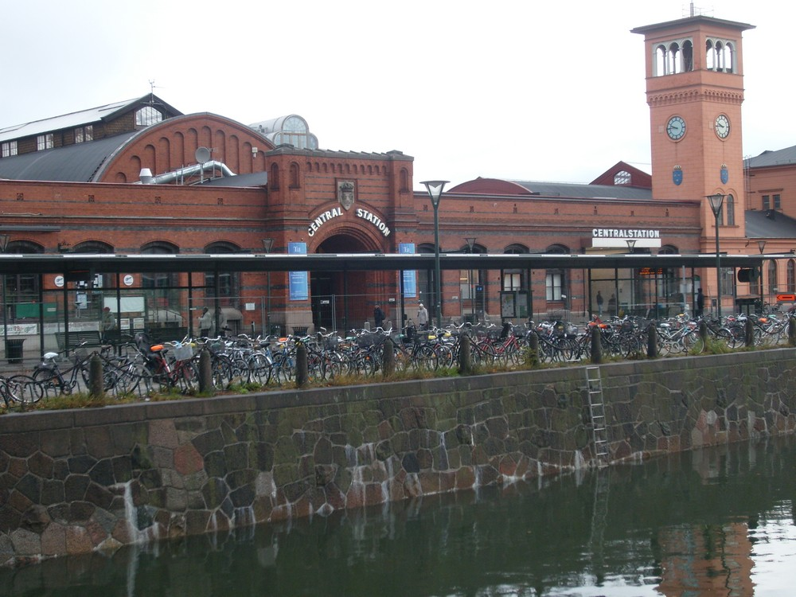
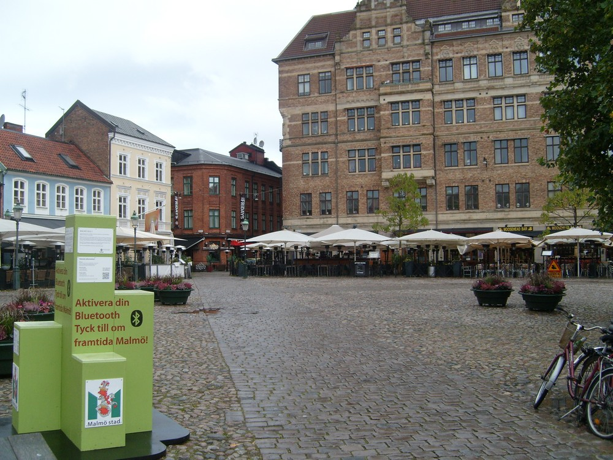
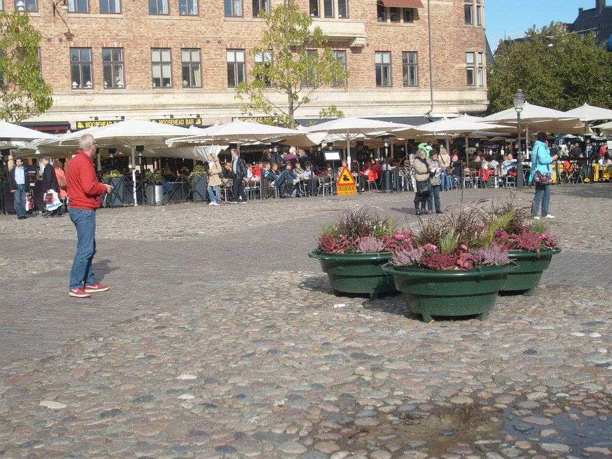
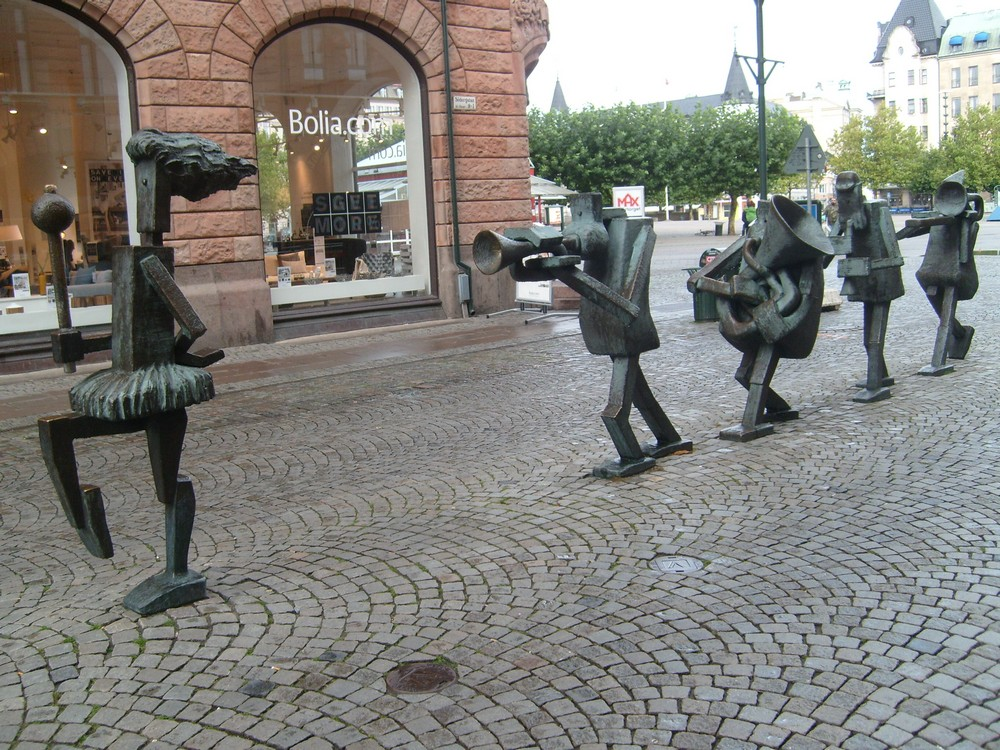
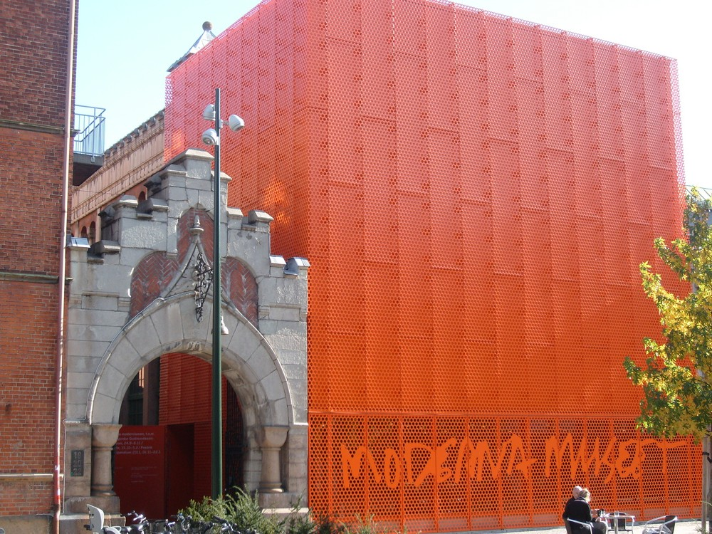
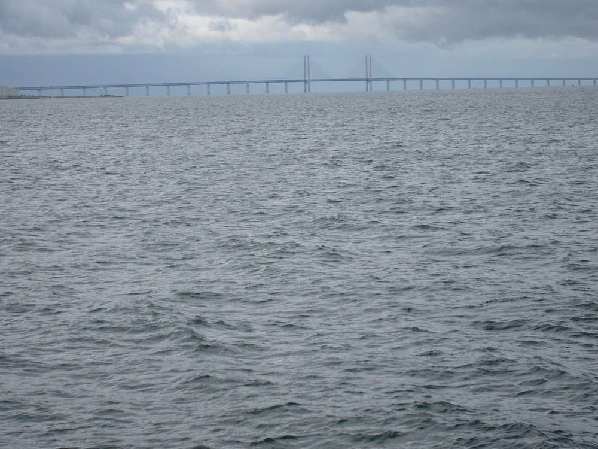

Visiting Malmo
 |  |
|
If you are in Copenhagen it would be a pity not to make a day trip to Malmo, the third largest city in Sweden, as it is only 35 minutes away by train. Besides there is a train from either city's central station every 20 minutes. In fact the Oresund Bridge, 7.845km long and inaugurated in July 2000, has helped to bring the two cities so much closer together in travelling time.
One of the must-see places in Malmo, if only for its uniqueness, is the 190m high Turning Torso, a structure of twisting cubes, designed by Santiago Calatrava, a Spanish architect and which was open in 2005. It is but a short bus ride from the central station. Take Bus No. 2 from near the station to go there. However, before you board the bus you need to buy the bus tickets from the Skanetrafiken in the railway station as without them you will not be able to board any of the buses in Malmo as the bus conductors are not allowed to accept cash. There is an alternative though, and that is to pay with your cellphone. You do this before the bus conductor by typing the letters MAV, validating it, then keying in the number 72040. By the way you can only admire the Turning Torso from the outside. As it is a private residential building, public access is normally not allowed though I hear that it might be possible to visit the top of the building on certain days in summer. However after having admired the architectural wonder from the outside you could turn left and head for the seafront which will give you plenty of invigorating sea breeze plus an overall view of the Oresund Bridge that spans the two Scandinavian countries. There are some shops here for you to take a drink as well before taking the bus back. If you have to return to Copenhagen to catch your plane, there is a train from Malmo every 20 minutes that drops you at the Kalstrup airport in hardly 25 minutes. There is no need for you to go to the Copenhagen central station first as it will be another three stops further down after the airport station. Like Denmark, Sweden does not use the Euro but has its own currency, the Swedish krona. However, if it is only for a short visit, there is no need for you to buy Swedish krona as many shops in Malmo will accept your Danish kroner or Euro though they will give you the change in Swedish krona. | |
Malmo Central Station
|
What is great about Malmo is that the main places of interest are all not too far from the central station so a day's visit will give you ample time for a leisurely stroll of the city.
Upon arrival at the Malmo central station you can take the southward exit (you will see a canal before you) and walk across the bridge on the right-hand side as it will lead you to where all the interesting sights are. But before you do that, you might want to make a stop at the Tourism Office first. In such a case turn right when exiting the central station and when you approach the road, just look on its opposite side and you should be able to see the word "Tourism" in huge letters. |
|
 The Malmo railway station as seen from the bridge that leads to Stortorget. |
|
 Stortorget, Malmo's oldest square and the city's focal point. |
|
 Lilla Torg, animated little square next to Stortorget for a drink or meal. |
In fact the street to the right will lead you to Lilla Torg, an animated little square full of typical Swedish restaurants, cafes and shops and where the locals and tourists gather. If you should be here at around lunch time you might want to stop here first for lunch. Otherwise take the street to your left which will lead you to Sodergatan, which in turn is the gateway to the principal pedestrian shopping area of the city. The Moderna Museet Malmo (Modern Museum of Malmo), inaugurated on December 26, 2009, is also in the vicinity at No. 22 Gasverksgatan. It has a collection of modern and contemporary art and is hardly three minutes walk to the left as you go down Sodergatan street or 5 minutes from the other popular square called Gustav Adolfs Torg. There is a similar museum in Stockholm which carries the same name (Moderna Museet). |

{kind=link}
{kind=link}
{kind=link}
 The 5 musician-statuettes that are a permanent sight along Sodergatan. |
{kind=link}
 Entrance to the Moderna Museet (Modern Museum) in Malmo. |
{kind=link}
 The nearly 8km long Oresund bridge, as seen from the Turning Torso building. |
{kind=link}
Useful Links For Malmo:Malmo City Guide Malmo's Skatepark Malmo City Walk tour Moderna Museet Malmo (Moderna Museum) |
Copenhagen, the neighbouring city